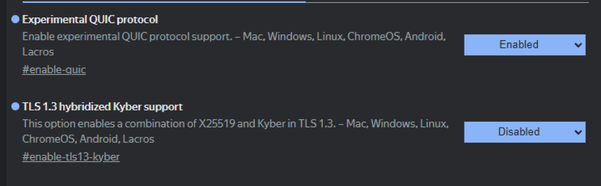

GoodbyeRKN | Первоначальная настройка
Добро пожаловать в GoodbyeRKN
Добро пожаловать в GoodbyeRKN — удобный лаунчер для работы с
GoodbyeDPI!
С этим приложением вы сможете воспользоваться всеми
возможностями GoodbyeDPI без необходимости редактировать
сложные bat-файлы или настраивать вручную. Все доступно в
удобном и понятном интерфейсе.
Кроме того, GoodbyeRKN предлагает множество полезных
функций, таких как работа в фоновом режиме, автозапуск при
включении ПК и многое другое для вашего удобства.
GoodbyeRKN | Первоначальная настройка
Перед началом работы убедитесь что ваш браузер настроен
корректно
Для правильной работы подмены пакетов DPI необходимо
настроить несколько параметров в вашем браузере.
1. Нажмите на тот браузер который вы используете Chrome либо
Firefox (Если используете другой браузер, нажмите на chrome)
2. Настройте два параметра как на картинке снизу

GoodbyeRKN | Первоначальная настройка
Почти готово! Сейчас GoodbyeRKN заработает!
Не забудьте выбрать конфиг в настройках, программа без
конфига работать не будет!